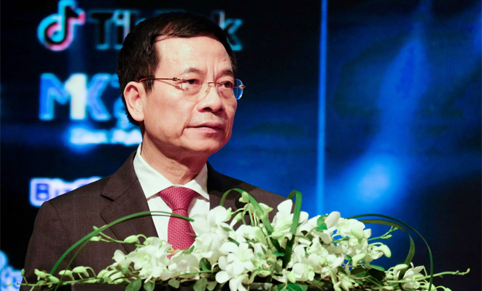
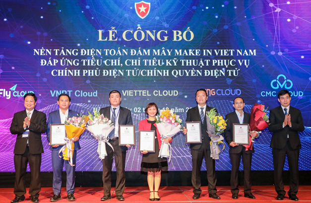

Tại Việt Nam, năm 2020 được coi là năm chuyển đổi số quốc gia, trong đó thúc đẩy các tổ chức, doanh nghiệp triển khai hạ tầng, nền tảng, sản phẩm, dịch vụ áp dụng các công nghệ tiên tiến như dữ liệu lớn, điện toán đám mây, trí tuệ nhân tạo, Internet vạn vật... Do đó, sự kiện Ngày An toàn thông tin Việt Nam, diễn ra ngày 2/12 tại Hà Nội, tập trung bàn về vấn đề an toàn, an ninh mạng trong quá trình chuyển đổi số.
"Cường quốc an ninh mạng cũng như cường quốc quân sự. Công nghiệp an ninh mạng cũng như công nghiệp quốc phòng. Việt Nam thịnh vượng trên không gian mạng thì cũng phải biết bảo vệ mình trên không gian mạng. Sứ mệnh của an toàn, an ninh mạng Việt Nam là bảo vệ sự thịnh vượng của Việt Nam trên không gian mạng", Bộ trưởng Thông tin và Truyền thông Nguyễn Mạnh Hùng nhấn mạnh tại sự kiện.

Bộ trưởng Bộ Thông tin và Truyền thông Nguyễn Mạnh Hùng. Ảnh: Mạnh Hưng
Theo Bộ trưởng, Việt Nam hiện làm chủ 90% hệ sinh thái các sản phẩm an toàn an ninh mạng phục vụ các cơ quan Đảng, Nhà nước. Dự kiến đến đầu năm 2021, Việt Nam sẽ làm chủ 100% các dịch vụ này.
"Chuyển đổi số là công cuộc toàn dân và toàn diện. Ứng dụng số sẽ là phổ cập. Bởi vậy, đảm bảo an toàn, an ninh mạng cũng phải được phổ cập", người đứng đầu Bộ Thông tin và Truyền thông nói.
Đại diện Viettel cho rằng việc không chuẩn bị tốt về an toàn thông tin dẫn đến tình trạng e dè, không dám đưa thông tin lên mạng. Do vậy, an toàn thông tin phải là yếu tố then chốt, đi cùng với chuyển đổi số, "nhúng vào chuyển đổi số".
Bảo mật cho 5G
Một trong những trụ cột quan trọng của chuyển đổi số là phát triển hạ tầng số quốc gia, như hạ tầng viễn thông băng rộng 5G, cáp quang và hạ tầng điện toán đám mây.
Mạng 5G cung cấp kết nối độ trễ thấp để điều khiển từ xa các phương tiện không người lái trên mặt đất và trên không, nền tảng robot, chăm sóc sức khỏe và cơ sở hạ tầng quan trọng, như điện, nước, khí đốt, giao thông...
"Do đó, bất kỳ sự cố hệ thống mang 5G nào xảy ra đều có thể gây tác hại nghiêm trọng", ông David Soldani, chuyên gia về an ninh mạng của Huawei, khuyến cáo.
5G là công nghệ không thể thiếu trong chuyển đổi số. Tuy nhiên, với độ trễ thấp, 5G có thể tạo điều kiện cho hacker tấn công nhanh vào các thiết bị IoT thông qua bo mạch đơn giản hay USB cắm trực tiếp vào hệ thống để cài đặt.
Theo ông Soldani, bảo mật 5G đòi hỏi sự hợp tác về tiêu chuẩn, thiết bị và việc triển khai. Để giảm thiểu rủi ro an ninh mạng, các nhà cung cấp phải ưu tiên an ninh mạng một cách đầy đủ, có trách nhiệm đánh giá rủi ro và thực hiện các biện pháp thích hợp để đảm bảo tuân thủ bảo mật.
5 nền tảng đám mây đáp ứng tiêu chuẩn
Nhằm đẩy nhanh việc phát triển các nền tảng đám mây, từ tháng 4, Bộ Thông tin và Truyền thông ban hành bộ tiêu chí, chỉ tiêu kỹ thuật để đánh giá các giải pháp đám mây.

Các doanh nghiệp nhận chứng nhận nền tảng điện toán đám mây.
Tại sự kiện Ngày An toàn thông tin, Bộ Thông tin và Truyền thông trao chứng nhận cho 5 nền tảng đám mây "Make in Vietnam" đầu tiên đáp ứng các yêu cầu an toàn thông tin phục vụ chính phủ điện tử và chính quyền điện tử, gồm Viettel, VNG, CMC, VNPT và VCCorp. Ông Vũ Minh Trí, Giám đốc VNG Cloud chia sẻ: "Khi các doanh nghiệp chuyển đổi số, phần lớn gặp vấn đề trong việc lựa chọn dịch vụ đám mây đáp ứng đầy đủ nhu cầu về công nghệ hiện đại và tuân thủ an toàn thông tin mạng cũng như Luật An ninh mạng của Việt Nam. Việc được trao chứng nhận là một trong những yếu tố cốt lõi giúp doanh nghiệp giải quyết những nhu cầu cấp thiết trên".
Trong khi đó, ông Nguyễn Thành Hưng, Chủ tịch Hiệp hội An toàn thông tin VNISA, nhấn mạnh tầm quan trọng của các sản phẩm Make in Vietnam. "Năng lực bảo đảm an toàn thông tin của đất nước phải được dựa trên nền tảng quan trọng là các sản phẩm, dịch vụ, giải pháp trong hệ sinh thái an toàn thông tin, do các doanh nghiệp Việt Nam làm chủ", ông Hưng nói.
Ngày An toàn thông tin Việt Nam, sự kiện thường niên của VNISA, năm nay được tổ chức theo mô hình trực tiếp kết hợp trực tuyến, với hơn 1.500 khách tham dự.